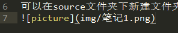
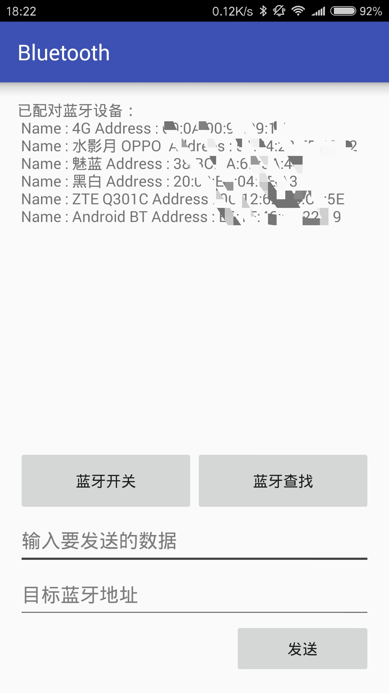

可以在source文件夹下新建文件夹-img，将图片放在里面，如下使用方式：

Android蓝牙的使用
最近刚刚学习了一些关于蓝牙的知识，在这里总结一下。
蓝牙的基本控制
当然，首先是获取需要的蓝牙权限，不然编写代码的时候编译器总是警告。1
2<uses-permission android:name="android.permission.BLUETOOTH" />
<uses-permission android:name="android.permission.BLUETOOTH_ADMIN" />
其次是建立蓝牙通信时所需要的“UUID”,UUID有点像TCP协议中的端口号，可以自己定义。
一般常用的UUID为：00001101-0000-1000-8000-00805f9b34fb1
private final UUID MY_UUID = UUID.fromString("00001101-0000-1000-8000-00805f9b34fb");
要使用蓝牙就要实现对蓝牙的一些基本控制，获取蓝牙适配器：1
BluetoothAdapter bluetoothAdapter = BluetoothAdapter.getDefaultAdapter();
使用Google API提供的一些方法可以直接实现对蓝牙的控制：1
2
3
4
5
6
7
8bluetoothAdapter.isEnabled();//判断蓝牙是否开启，返回布尔值
bluetoothAdapter.enable();//开启蓝牙，返回布尔值
bluetoothAdapter.disable();//关闭蓝牙，返回布尔值
bluetoothAdapter.getName();
bluetoothAdapter.getAddress();//获取本机蓝牙和地址
bluetoothAdapter.getBondedDevices();//获取已配对蓝牙，返回一个蓝牙设备对象集
bluetoothAdapter.isDiscovering();//蓝牙是否处于对周围扫描的状态
bluetoothAdapter.startDiscovery();//启动蓝牙扫描
通过意图实现对蓝牙可见性的控制
1 | //启动修改蓝牙可见性的Intent |
使用下方代码可以将已配对蓝牙信息打印：1
2
3
4
5
6
7
8Set<BluetoothDevice> pairedDevices = bluetoothAdapter.getBondedDevices();
Iterator<BluetoothDevice> iterator = pairedDevices.iterator();
tv.setText("已配对蓝牙设备：");
while(iterator.hasNext())
{
BluetoothDevice bd = iterator.next() ;
tv.setText(tv.getText() + "\n" + " Name : " + bd.getName() + " Address : " + bd.getAddress());
}
蓝牙扫描的结果无法直接获得，它是通过广播进行通知，所以需要实现对系统广播的监听：1
2
3
4
5
6
7
8
9
10
11
12
13
14
15
16
17
18
19
20
21
22
23
24
25
26
27
28//蓝牙扫描时的广播接收器
private BroadcastReceiver BTDiscoveryReceiver = new BroadcastReceiver()
{
@Override
public void onReceive(Context context, Intent intent)
{
// TODO Auto-generated method stub
if (BluetoothAdapter.ACTION_DISCOVERY_STARTED.equals(intent.getAction()))
{
tv.setText(tv.getText() + "\n" + "扫描开始...");
}
else if(BluetoothAdapter.ACTION_DISCOVERY_FINISHED.equals(intent.getAction()))
{
tv.setText(tv.getText() + "\n" + "扫描完成");
}
else if(BluetoothDevice.ACTION_FOUND.equals(intent.getAction()))
{
tv.setText(tv.getText() + "\n" + "找到设备：");
BluetoothDevice btDevice = intent.getParcelableExtra(BluetoothDevice.EXTRA_DEVICE);
if(btDevice != null)
tv.setText(tv.getText() + "Name : " + btDevice.getName() + " Address: " + btDevice.getAddress());
}
else if(BluetoothDevice.ACTION_BOND_STATE_CHANGED.equals(intent.getAction()))
{
toast("蓝牙状态改变");
}
}
};
蓝牙客户端
要实现蓝牙的数据传输，需要发送与接受，即客户端与服务端，在Android APP上可以将客户端与服务端集成在一起。
向其他蓝牙设备发送消息时，需要知道对方的蓝牙地址，建立蓝牙连接，下方是蓝牙的数据发送代码：1
2
3
4
5
6
7
8
9
10
11
12
13
14
15
16
17
18
19
20
21
22
23
24
25
26
27
28
29
30
31
32
33
34// 判断当前是否还是正在搜索周边设备，如果是则暂停搜索
if (bluetoothAdapter.isDiscovering()) {
bluetoothAdapter.cancelDiscovery();
}
// 如果选择设备为空则代表还没有选择设备
if (selectDevice == null) {
//通过地址获取到该设备
selectDevice = bluetoothAdapter.
getRemoteDevice(btAddress.getText().toString().trim());//获取输入的地址
}
try {
// 获取到客户端接口
clientSocket = selectDevice.createInsecureRfcommSocketToServiceRecord(MY_UUID);
/**当Android版本低于2.3时使用下方代码**/
// clientSocket = selectDevice.createRfcommSocketToServiceRecord(MY_UUID);
clientSocket.connect();// 向服务端发送连接
os = clientSocket.getOutputStream();// 获取到输出流，向外写数据
if (os != null) {// 判断是否拿到输出流
// 需要发送的信息
String text = data.getText().toString();
// 以utf-8的格式发送出去
os.write(text.getBytes("utf-8"));
toast("发送信息成功，请查收");
os.close();//关闭输出流
} else {
toast("输出流为空");
}
} catch (IOException e) {
// TODO Auto-generated catch block
e.printStackTrace();
// 如果发生异常则告诉用户发送失败
toast("io异常");
}
蓝牙服务端
蓝牙服务端会出现阻塞语句，所以需要新开线程，程序如下：1
2
3
4
5
6
7
8
9
10
11
12
13
14
15
16
17
18
19
20
21
22
23
24
25
26
27
28
29
30
31
32
33
34
35
36
37
38
39
40
41
42
43
44
45
46
47
48
49
50
51
52
53// 创建handler，因为我们接收是采用线程来接收的，在线程中无法操作UI，所以需要handler
Handler handler = new Handler() {
@Override
public void handleMessage(Message msg) {
// TODO Auto-generated method stub
tv.setText(tv.getText() + "\n"+"收到消息：" + msg.obj.toString());
super.handleMessage(msg);
}
};
// 服务端接收信息线程
private class AcceptThread extends Thread {
private BluetoothServerSocket serverSocket;// 服务端接口
private BluetoothSocket socket;// 获取到客户端的接口
private InputStream is;// 获取到输入流
private OutputStream os;// 获取到输出流
AcceptThread() {
try {
// 通过UUID监听请求，然后获取到对应的服务端接口
serverSocket = bluetoothAdapter.listenUsingInsecureRfcommWithServiceRecord(NAME, MY_UUID);
/**当Android版本低于2.3时使用下方代码**/
//serverSocket = bluetoothAdapter.listenUsingRfcommWithServiceRecord(NAME, MY_UUID);
} catch (Exception e) {
// TODO: handle exception
e.printStackTrace();
}
}
public void run() {
try {
while (true) {
socket = serverSocket.accept();
is = socket.getInputStream();
os = socket.getOutputStream();//必须要有这个
byte[] buffer = new byte[102400];//一次性接受数据，笨方法
int count = is.read(buffer);
//while (-1 != (count = is.read(buffer))) {
Message msg = new Message();//一个message只能发送一个消息
msg.obj = new String(buffer, 0, count, "utf-8");
handler.sendMessage(msg);
// }
os.close();//这一句代码是个坑，在上面耗费时间2天
}
} catch (Exception e) {
// TODO: handle exception
e.printStackTrace();
Message msg = new Message();
msg.obj = "服务端异常";
handler.sendMessage(msg);
}
}
}
手机截屏如下：

自定义控件的监听
自定义控件继承自View，所以可以使用父类的listener。
若自定义控件只有一个元素，且仅仅监听其点击事件，直接使用父类的方法较为方便：
自定义控件class
1 | public class MyView extends View{...} |
使用控件的目标Activity
1 | MyView myView = new MyView(); |
若自定义控件不只一个元素，我们不只是仅仅想简单的监听点击事件，还想获取其手势的滑动，点击的位置，我们便自己写监听：
自定义控件class
1 | public class MyView extends View{ |
使用控件的目标Activity
1 | MyView myView = new MyView(); |
此文为个人观点，若有谬误或遗漏请包涵！
自定义控件
在Android的学习过程中，很早便听说过自定义控件，这个暑假终于静下心来花了一段时间来学习探究。
要自定义控件，首先要了解View，因为所有的控件都继承自View：1
public class MyView extends View{}
当然，我们也可以继承其它控件，如ImageView，TextView等。
自定义属性
既然是自定义，首先要设置控件的属性attr，在res/values/ 下建立一个attrs.xml文件夹，在里面定义控件的属性：1
2
3
4
5
6
7<resources>
<declare-styleable name="MyView">
<attr name="Text" format="string" />
<attr name="Color" format="color"/>
<attr name="Bitmap" format="reference"/>
</declare-styleable>
</resources>
在上面的代码中自定义了3个属性，format是属性的取值类型，一共有10个：
- reference：参考某一资源ID
- color：颜色值
- boolean：布尔值
- dimension：尺寸值
- float：浮点值
- integer：整型值
- string：字符串
- fraction：百分数
- enum：枚举值
- flag：位或运算
一个属性还可呀定义多种类型：<attr name="Bitmap" format="reference|color"/>
属性的使用
在xml文件中，可以直接使用：1
2
3
4
5
6
7
8<?xml version="1.0" encoding="utf-8"?>
<LinearLayout xmlns:android="http://schemas.android.com/apk/res/android"
xmlns:app="http://schemas.android.com/apk/res-auto">
<com.example.MyView
android:layout_width="match_parent"
android:layout_height="match_parent"
app:Bitmap="@drawable/ic_lab" />
</LinearLayout>
注意：前面一定要加：xmlns:app="http://schemas.android.com/apk/res-auto" app可以换成其它字符。
构造函数
构造函数是必须的，打开View.class,我们可以看到View下面的3个构造函数:1
2
3
4
5
6
7
8
9
10
11public View(Context context) {
throw new RuntimeException("Stub!");
}
public View(Context context, AttributeSet attrs) {
throw new RuntimeException("Stub!");
}
public View(Context context, AttributeSet attrs, int defStyleAttr) {
throw new RuntimeException("Stub!");
}
根据需要，我们可以只重写其中一个便可，在构造函数中我们可以获取自定义属性的值：1
2
3
4
5
6
7
8
9
10public MyView(Context context, AttributeSet attrs){
super(context,attrs);
if(attrs!=null){
TypedArray a = getContext().obtainStyledAttributes(attrs,R.styleable.MyView);
mText=a.getString(R.styleable.MyView_Text);
mColor=a.getColor(R.styleable.MyView_Color);
mBitmap=a.getResourceId(R.styleable.MyView_Bitmap, 0);
a.recycle();
}
}
重写onDraw函数
1 | @Override |
在此函数中绘制控件外观。
重写onMeasure函数
1 | @Override |
如果对控件的大小、和位置没有要求，完全随父容器，可以直接使用自带方法，不用重写。
如果要对控件的大小和位置进行设置的话，要进行重写：1
2
3
4
5
6
7
8
9
10
11
12
13
14
15
16
17
18
19
20
21
22
23
24
25
26
27
28
29
30
31
32
33
34@Override
protected void onMeasure(int widthMeasureSpec, int heightMeasureSpec)
{
int widthMode = MeasureSpec.getMode(widthMeasureSpec);
int widthSize = MeasureSpec.getSize(widthMeasureSpec);
int heightMode = MeasureSpec.getMode(heightMeasureSpec);
int heightSize = MeasureSpec.getSize(heightMeasureSpec);
int width;
int height ;
if (widthMode == MeasureSpec.EXACTLY)
{
width = widthSize;
} else
{
mPaint.setTextSize(mTitleTextSize);
mPaint.getTextBounds(mTitle, 0, mTitle.length(), mBounds);
float textWidth = mBounds.width();
int desired = (int) (getPaddingLeft() + textWidth + getPaddingRight());
width = desired;
}
if (heightMode == MeasureSpec.EXACTLY)
{
height = heightSize;
} else
{
mPaint.setTextSize(mTitleTextSize);
mPaint.getTextBounds(mTitle, 0, mTitle.length(), mBounds);
float textHeight = mBounds.height();
int desired = (int) (getPaddingTop() + textHeight + getPaddingBottom());
height = desired;
}
setMeasuredDimension(width, height);
}
自定义控件的基本实现就是这样，当然，既然是一个控件，就免不了响应，需要对控件进行手势监听设置，这个下篇文章进行深究。
博客的搭建
作为自建博客的第一篇博文，我就说一说搭建此博客的一点心得。
网络上有很多第三方博客网站，注册就能使用，比较方便，但它的版面比较固定，还有广告等问题，使用体验不是很好。
作为一个程序猿，就打算自己搭建一个。搭建的方法和途径有很多，比如我的小伙伴就用wordpress在云服务器上搭建的，经过我的再三考虑，我决定使用hexo在github上搭。
环境配置
安装Node，这个是用来生成静态页面的，可以直接到官网上下载，安装过程很简单，在此就不多说了。
安装Git，同样官网下载安装即可。
github账号，没有的话去官网注册。
安装hexo
新建一个文件夹，名字随便，比如我的是：D:\blog
进入此文件夹，右击打开“Git Bash”，当然你也可以用命令进入此文件夹：
1 | $ cd /d/blog |
直接使用命令安装hexo：
1 | $ npm install -g hexo |
然后初始化：
1 | $ hexo init |
生成静态页面：
1 | $ hexo g |
启动本地服务，进行预览：
1 | $ hexo s |
这时你打开浏览器，输入localhost:4000就可以看见了
现在，你的blog框架已经弄好了，当然只是在本地，下面我们把它上传到github仓库，进行托管。
Github配置
登录github，新建Repository（右上角“+”号–>New repository）,取名为：yourname.github.io 比如我的就叫:farenoughstone.github.io
如果你是小白，其它不用管，直接新建。
这里有两种协议，一种是SSH，上传不需要密码，不过要事先配置；另一种就是HTTPS。
打开文件：_config.yml
这里可以用编辑框vim打开，但是vim不能编辑汉字，有汉字就会出现乱码，所以最好用其它编辑器，保存文件编码方式为：UTF-8
将文件最下面改成：
1 | deploy: |
链接改成你自己的就行，用SSH也一样。
因为要将文件上传到github，所以要安装一些必要插件：
1 | $ npm install hexo-deployer-git --save |
上传到github：
1 | $ hexo d |
如果你用的是HTTPS，这儿它会有一个弹窗，要你输入github的账号和密码。
现在在浏览器中输入你的仓库名就能看见了，比如我的是：farenoughstone.github.io
hexo主题配置
hexo的默认主题是landscape，你可以去hexo官方下载，当然如果你是做前端开发的，自己写不是更有意思吗？
下载命令为：
1 | $ git clone https://github.com/...... themes/... |
中间是你目标主题的链接，后面是保存到：themes/(主题名字)。
然后将前面提到过的 _config.yml 文件中的 theme 属性改为你下载的主题的名字。
依次执行命令：
hexo clean
hexo g
hexo d
主题就配置好了并上传到github了。
域名配置
我们可以使用github的二级域名，同样可以使用自己的域名。
第一步当然是去买个域名了，不同的域名有不同价格，看自己咯！
然后在我们的Hexo项目的sources目录下新建个CNAME文件，文件中写自己的域名，并上传。
使用命令获取你博客主机的IP地址：
1 | $ ping yourmame.github.io |
再在你购买域名的官网上将域名 A 解析到你获得的IP地址，同时添加 CNAME 解析，等待生效就好。